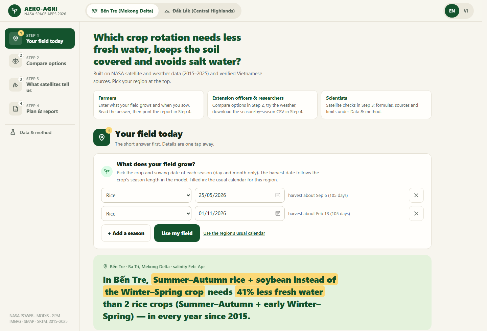
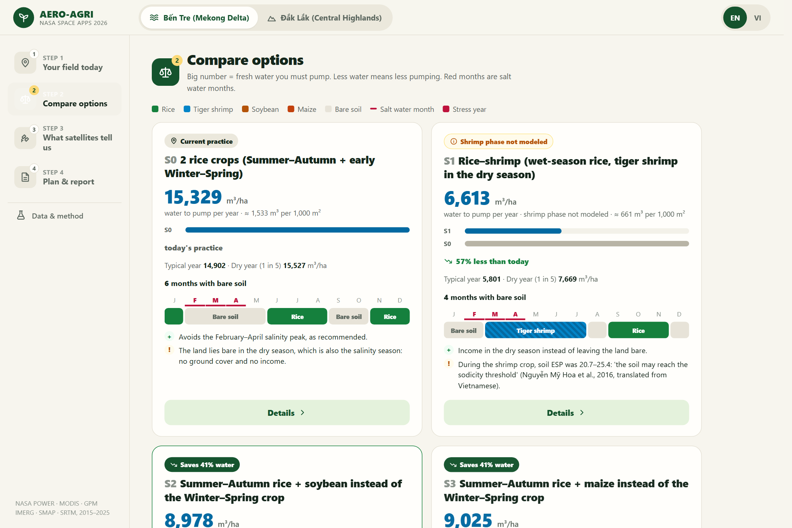
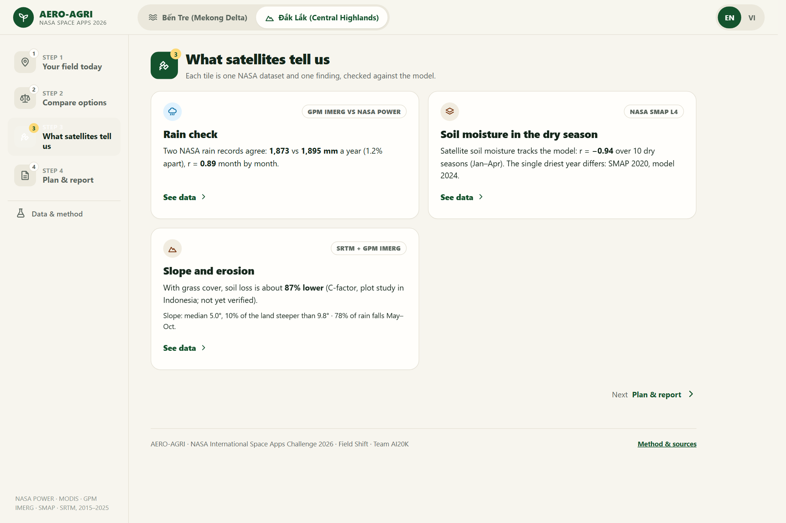

AERO-AGRI: Crop-Calendar Adaptation Backed by NASA Satellites AERO-AGRI: Chuyển đổi Lịch Thời Vụ Thích Ứng Biến Đổi Khí Hậu từ Vệ Tinh NASA
A farmer-first decision engine combining 6 NASA Earth observation products with deterministic FAO-56 crop physics — giving every irrigation number a source and every rotation its real-world trade-offs. Công cụ hỗ trợ quyết định lấy nông dân làm trung tâm, kết hợp 6 bộ dữ liệu quan trắc Trái Đất của NASA với mô hình vật lý cây trồng FAO-56 — mọi con số đều truy xuất được nguồn và nêu rõ đánh đổi.

Two Opposite Climate Squeezes — One Transparent Decision Gap Hai Áp Lực Khí Hậu Trái Ngược — Một Khoảng Trống Quyết Định
- Salinity deadline: NAEC 2026–2027 handbook urges sowing in Oct–Nov so harvest finishes before Feb–Apr saltwater peaks. Áp lực xâm nhập mặn: Sổ tay Khuyến nông QG khuyến cáo xuống giống T10–T11 để thu hoạch trước đỉnh mặn T2–T4.
- 2016 drought & salinity intrusion (crop year 2015/16): Modeled rice deficit spiked to 18,740 m³/ha (+22% above mean) while late sowing risked salt loss. Hạn mặn 2016 (vụ 2015/16): Thiếu hụt nước lúa tăng vọt lên 18,740 m³/ha; gieo muộn dễ mất trắng vì mặn.
- False silver bullets: Rice–shrimp (S1) creates dry-season income, yet raises soil ESP to 20.7–25.4 (sodicity threshold, Nguyễn Mỹ Hoa et al., 2016). Đánh đổi ẩn của Lúa–Tôm (S1): Có thu nhập mùa khô nhưng ESP đất tăng 20,7–25,4 (nguy cơ kiềm hóa đất).
10.0992°N, 106.6040°E · NASA MODIS NDVI verified 2022–2024 + Báo Nông nghiệp (22/02/2024)
- Monsoon erosion exposure: NASA SRTM shows 5.0° median slope (10% steeper than 9.8°) under 77.8% rain in May–Oct. Nguy cơ xói mòn cao: Độ dốc trung vị 5,0° (10% vượt 9,8°) hứng 77,8% lượng mưa dồn vào tháng 5–10.
- Heat & drought squeeze: Robusta loses ~14% yield per +1 °C season warming (Kath et al., 2020); driest 2024 reached 4,608 m³/ha. Nhạy cảm nhiệt độ: Cà phê vối giảm ~14% năng suất mỗi +1 °C tăng (Kath et al., 2020).
- Decision need: Farmers need honest trade-offs — not blind promotion of cover crops without dry-season water budgeting. Nhu cầu thực tế: Nông dân cần biết rõ cái giá về nước mùa khô để cân đối trước khi chọn thảm phủ.
12.8314°N, 108.1282°E · NASA SMAP L4 + SRTM v3 + GPM IMERG + WASI / FAO-56
6 NASA Satellites Driving a Deterministic FAO-56 Physics Kernel 6 Nguồn Dữ Liệu Vệ Tinh NASA Kết Hợp Mô Hình Vật Lý FAO-56 Minh Bạch
Rice Extra = 200mm sat + 100mm pond + 4mm/d
P_eff: FAO TM3 (rice) · USDA-SCS (upland)
Relative RUSLE: SoilLoss(D1/D0) = C_D1 / C_D0
- Step 1: Short Answer & Field Builder — farmers enter custom crops/sowing dates & get instant m³/ha + scenario delta. Bước 1: Nhập ruộng thực tế & thử kịch bản thời tiết.
- Step 2: 12-Month Calendar & Risks — bare soil, salinity Feb–Apr strip, heat dots, and evidence drawers. Bước 2: Lịch 12 tháng trực quan, cảnh báo mặn & đất trống.
- Step 3: Independent Satellite Audits — MODIS sowing lag, GPM vs POWER, SMAP correlation, SRTM slope. Bước 3: Đối chiếu chéo độc lập với 4 vệ tinh NASA.
- Step 4: Printable Brief & CSV — field report for cooperatives + full data transparency. Bước 4: In báo cáo hoặc tải CSV cho khuyến nông.
http.server, Pandas/NumPy, vendored Chart.js, zero external CDNs.
Soybean Rotation (S2) Cuts Pumping by 41% in All 10 Crop Years Luân Canh Đậu Tương (S2) Giảm 41% Nước Bơm Ở Cả 10 Năm Mùa Vụ
| Strategy | Mean (m³/ha) | P80 Dry Year | Hot&Dry (+1.5°C, −20% rain) | Caveat |
|---|---|---|---|---|
| S0 2 Rice Crops | 15,329 | 15,527 | 17,248 | 6 mo bare |
| S2 Rice + Soybean | 8,978 (−41.4%) | 9,576 | 10,521 | Best freshwater cut |
| S3 Rice + Maize | 9,025 (−41.1%) | 9,608 | 10,568 | Heat & fodder |
| S1 Rice–Shrimp | 6,613 (shrimp phase not modeled) | 7,669 | 7,914 | Shrimp unmodeled |

S1 only counts wet-season rice water because FAO-56 cannot model brackish pond intake/exchange. We explicitly label "Shrimp phase not modeled" and surface ESP 20.7–25.4 sodicity risk before farmers switch. S1 chỉ tính phần lúa mùa mưa do FAO-56 không mô phỏng được nước lợ ao tôm. App gắn nhãn cảnh báo rõ "Chưa mô phỏng pha tôm" và nguy cơ kiềm hóa đất ESP 20,7–25,4.
Self-Auditing the Model: MODIS, GPM IMERG, SMAP L4 & SRTM Vệ Tinh Kiểm Chứng Mô Hình: Đối Chiếu Chéo MODIS, GPM IMERG, SMAP & SRTM
129 mo (2015–2025): Bến Tre 1,773 vs 1,752 mm/yr (r = 0.90); Đắk Lắk 1,895 vs 1,873 mm/yr (r = 0.89). 129 tháng: NASA POWER và GPM IMERG khớp 1,2% năm, r tháng = 0,89–0,90.
182 clear 500 m scenes: Winter–Spring sowing lags Nov 1 by +16d median; 2023 matches press within 5d. Phát hiện sạ 17/11/2023 vs báo ~22/11/2023 (lệch 5 ngày); trung vị sạ muộn +16 ngày.
Đắk Lắk Jan–Apr vs modeled deficit (10 yrs). SMAP driest = 2020, Model = 2024. Excluded over flooded Bến Tre rice. Tương quan r = −0,94; nêu rõ lệch năm hạn nhất (2020 vs 2024) & loại ở Bến Tre.

One Tap From Actionable Advice to Raw Evidence & Printable Reports Từ Câu Trả Lời Dễ Hiểu Tới Bằng Chứng Gốc & Báo Cáo Chỉ Trong Một Chạm
Scientific Honesty, Scaling Roadmap & Compliance Disclosures Trung Thực Khoa Học, Lộ Trình Mở Rộng & Công Bố Minh Bạch Chuẩn NASA
- Verified in repo: 11-year NASA POWER & IMERG match (+1.2%), MODIS 2023 rice check (−5d), SMAP Đắk Lắk (r = −0.94), and 81 passing unit tests. Đã kiểm chứng: Khớp mưa IMERG, ngày sạ MODIS 2023 (lệch 5 ngày), SMAP r = −0,94 và 81 pytest.
- Soil percolation sensitivity: Ba Tri clay assumption (4 mm/day = 720 mm/rice crop) vs 2 mm/day changes annual deficit by ~393 mm (both shown). Độ nhạy thấm đất lúa: Mức thấm 4 vs 2 mm/ngày làm lệch tổng ~393 mm (app hiển thị cả hai ngưỡng).
- Missing local measurements: No in-situ salinity station series (months Feb–Apr from NAEC handbook); 50 km POWER grid misses microclimate. Thiếu đo đạc tại chỗ: Chưa có chuỗi trạm đo độ mặn EC; lưới POWER 50 km chưa phản ánh vi khí hậu.
- Unverified agronomic transfers: Đắk Lắk C-factors (0.045 / 0.006) come from Lampung, Indonesia & assume full grass cover; economics & shrimp phase excluded. Tham số chuyển giao: Hệ số xói mòn C lấy từ Lampung (Indonesia); chưa tính kinh tế & nước lợ ao tôm.